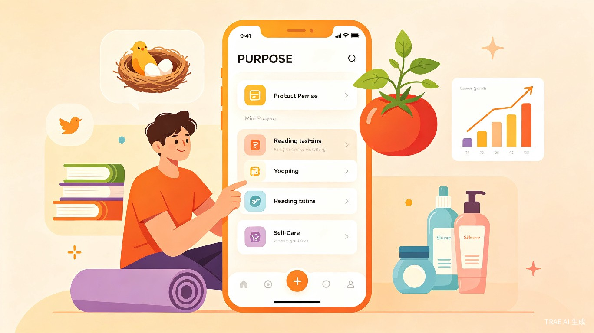
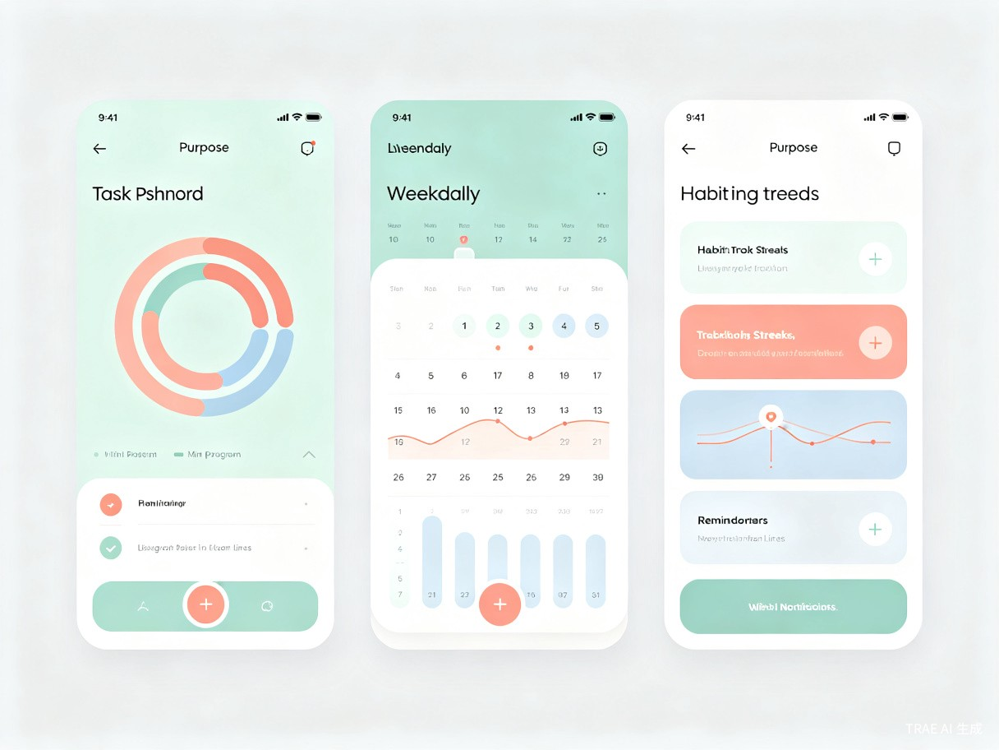

祝您实现计划和成功的导师与监督者

现代年轻人生活节奏快、事务繁杂，常常有愿望却缺乏执行力。计划帮手致力于帮助用户快速根据目标制定计划并跟踪执行，将"我想做"转化为"我正在做"，最终达成"我做到了"。
最近生活太琐碎啦！我需要对小鸟的孵蛋出壳做定期观察帮助；对自己种的番茄苗进行阶段培育和浇水；职业考试在即需要复习；需要监督表妹的阅读任务；需要帮助自己从失恋中走出来；需要修复复合的关系；还要监督自己护肤和做瑜伽。事情太多，有的时候会忘了做也不想做。

年轻、热爱生活、生活节奏快的城市年轻用户，尤其是20-35岁的都市白领、大学生和年轻家庭。他们渴望自我提升，追求生活品质，但常常被繁忙的工作和社交生活分散注意力。
如果没有计划帮手，用户会一直停留在"我有个愿望"的状态：
目标管理类应用市场规模持续增长。计划帮手以微信小程序为载体，无需下载安装，降低用户使用门槛，具备天然的社交传播属性。商业模式可包括：
计划帮手通过AI辅助目标拆解，将原本需要数小时思考的计划制定过程缩短至几分钟；智能提醒系统确保用户不会错过关键任务节点；数据可视化让用户清晰掌握自己的成长轨迹，形成正向反馈循环。
在快节奏的都市生活中，越来越多的年轻人陷入"躺平"与"内卷"的两难困境。计划帮手不是制造焦虑，而是帮助用户找到属于自己的节奏，通过小步快跑的方式实现持续成长。当更多人能够坚持自己的计划、实现自己的目标，整个社会的活力和幸福感都将得到提升。
| 功能模块 | 功能描述 | 解决痛点 |
|---|---|---|
| AI计划生成 | 输入目标，AI自动拆解为阶段性任务和时间节点 | 缺乏方向感 |
| 智能提醒 | 基于任务优先级和时间安排，推送个性化提醒 | 容易遗忘 |
| 进度追踪 | 可视化展示任务完成进度和习惯养成 streak | 进度不透明 |
| 社交监督 | 邀请好友监督计划执行，形成 accountability | 孤独感强 |
| 数据分析 | 周/月/年度报告，分析完成率和最佳执行时段 | 缺乏反馈 |
| 模板市场 | 提供阅读、健身、学习、情感恢复等现成计划模板 | 起步困难 |
计划帮手不仅是一个工具，更是用户实现自我价值的陪伴者和见证者。从照顾一只小鸟的孵蛋出壳，到走出失恋的阴影并修复关系；从培育一株番茄苗，到顺利通过职业考试——每一个微小目标的达成，都是生活变得更加美好的证明。
我们相信，当计划不再只是纸上的文字，而是每天 actionable 的提醒和可感知的进步，每一个年轻人都能成为自己想成为的样子。